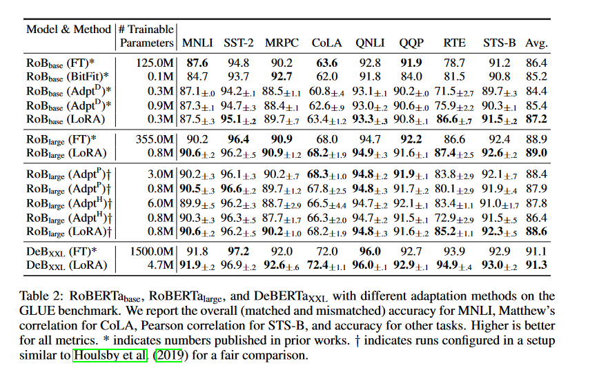

LoRA: Low Ranked Adaption of Large-Language Models
Authors
Edward J. Hu, Yelong Shen, Phillip Wallis, Zeyuan Allen-Zhu, Yuanzhi Li, Shean Wang, Lu Wang, Weizhu Chen
- Full fine tuning - retraining all parameters is expensive and impractical for large models.
- LoRA is a fine tuning technique which:
- does not mutate existing weights
- does not add inference latency to original model (unlike Adapter techniques)
- \(\Rightarrow\) performs \(\geq\) full fine tuning
- \(\Rightarrow\) deploy multiple finetuned versions of a model with little hardware costs
- Empirical study
- LoRA PyTorch package and model checkpoints from their study.
Goal
Given a pre-trained model, we want to create a variation of that model which is:
- performant on a specific downstream task
- has been trained on a new dataset, unseen by the pre-trained model
Full Fine Tuning
Train a variant of the model by updating all the parameters
\(\Rightarrow\) expensive to train
\(\Rightarrow\) for large models:
- a single deployment is a challenge
- deploying multiple fully fine tuned versions for each downstream task is impractical
Prevailing alternative methods before LoRA
Adapter methods
üìÉ Parameter-Efficient Transfer Learning for NLP by Houlsby et al.
- add adapters or “bottleneck layers” to targeted parameters you wish to fine tune
- original parameters are frozen
\(\Rightarrow\) results in a fine tuned model trained with fewer learned parameters than full fine tuning
\(\Rightarrow\) extends the size of the network, leading to higher interence times
Optimizing input
üìÉ Prefix-Tuning: Optimizing Continuous Prompts for Generation
- Train an input vector prefix suited to the task
\(\Rightarrow\) consumes input context length
Conclusion
\(\Rightarrow\) Trading off lower training costs for model quality
\(\Rightarrow\) These methods often fail to match the fine-tuning baseline
Inspiration: “Intrinsic Dimension”
- When we train deep learning networks, our architecture determines the number of parameters \(|\Theta| = P\).
- But once trained, often the networks are over-parameterized
\(\Rightarrow\) the power of the learned models can be expressed with fewer parameters \(D < P\).
üìÉ Measuring the Intrinsic Dimension of Objective Landscapes by Li et al. (2018)
- Start with a prior model architecture with \(|\Theta| = P\) parameters.
- Reimplement the model architecture by initialising the P parameters randomly and then freezing P - D of them.
- Train the model using only the free D parameters.
- Repeat the experiment until the performance reaches 90% of the original model \(\Rightarrow\) Intrinsic Dimension.
Hypothesis
When fine tuning a weight \(W\) to get our fine-tuned weight \(W^{\prime}\) \[W^\prime = W + \Delta W\] the intrinsic rank of \(\Delta W\) is small.
Weight Freezing
Consider a linear layer \[ y = W \cdot x + b\] and suppose we want to fine tune \(W\).
We can freeze \(W=W_0\) and \(b=b_0\), then learn a new tensor \(Z\) which has the same dimension as \(W\) : \[ y = (W_0+ Z) \cdot x + b_0 \tag{$\star$} \] where \(Z = \Delta W\), “the accumulated gradient update”.
Backpropagation should be able to express the same updates through Z as it would if we were updating W directly.
Then for inference with our fine-tuned model, we can simply swap out \(W\) for \(W^{^{\prime}} = W + Z\).
Matrix products and Rank
Rank \(\approx\) number of rows in a matrix
Suppose \(Z\) is an \(m \times n\) matrix. Then any matrices \(A\) and \(B\) satisfying
\[Z = B \cdot A\]
will be of size \(m \times r\) and \(r \times n\) respectively for some \(r\).
Regardless of the value of \(r\), we will always get back an \(m \times n\) matrix.
Factorizing \(Z\) into matrices \(A\) and \(B\) and choosing small \(r\) results in fewer parameters to learn.
Example
If \(m=20\), \(n=10\) then \(Z\) has \(|Z| = m \cdot n = 200\) parameters.
If \(k=r\), then \(|A| = 20 \cdot 2 = 40\) and \(|B| = 2 \cdot 10 = 20\) then by factorizing \(W\) into \(A\) and \(B\) we only need to learn \(60\) parameters versus 200.
Low Rank Updates
Implementing Matrix decomposition in \((\star)\)
\[ y = (W_0+ B\cdot A) \cdot x + b_0 \]
\(\Rightarrow\) The rank \(r \leq \min(m,n)\) of matrix \(A\) becomes a hyper parameter in our LoRA model.
\(\Rightarrow\) Lower rank means less learnable parameters
\(\Rightarrow\) LoRa
Applying the updates to all parameters is equivalent to full fine tuning.
Advantages
Limitations
Application to Transformers
Results
Inference Latency
Benchmark scores
